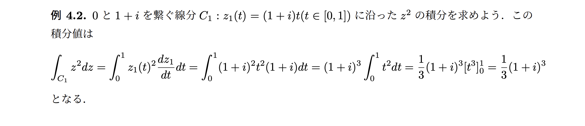
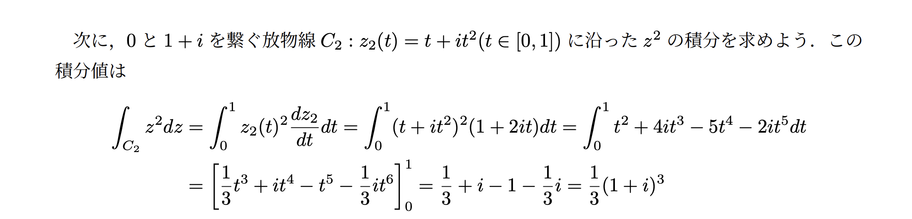
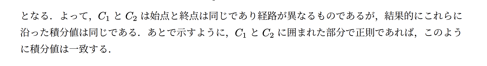
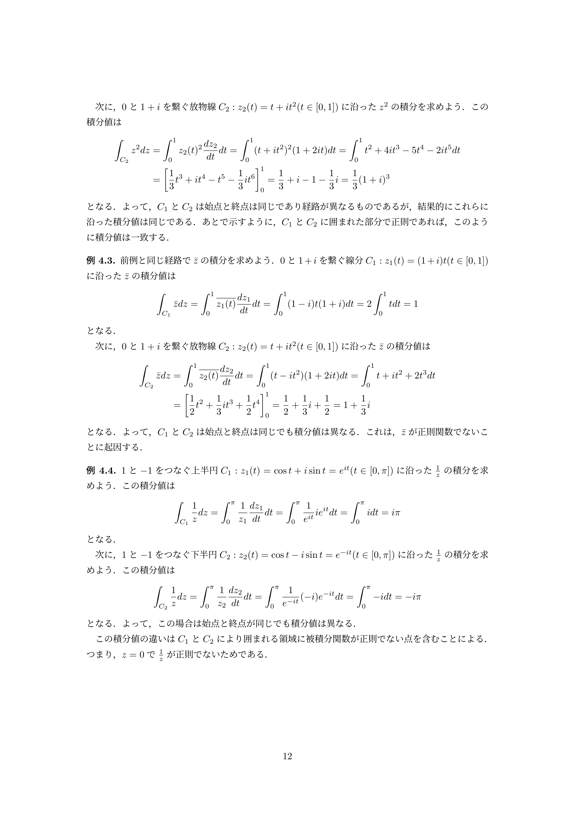
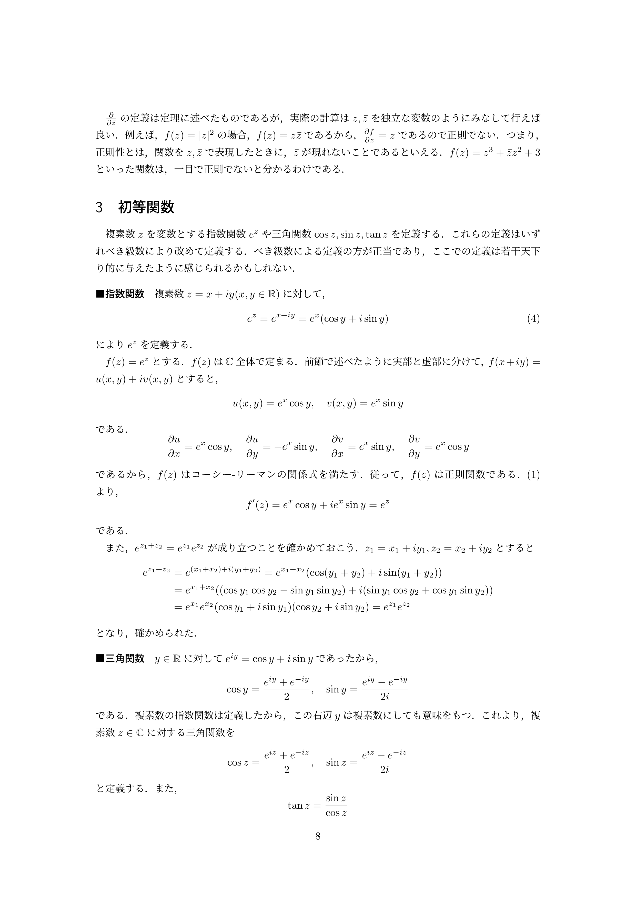
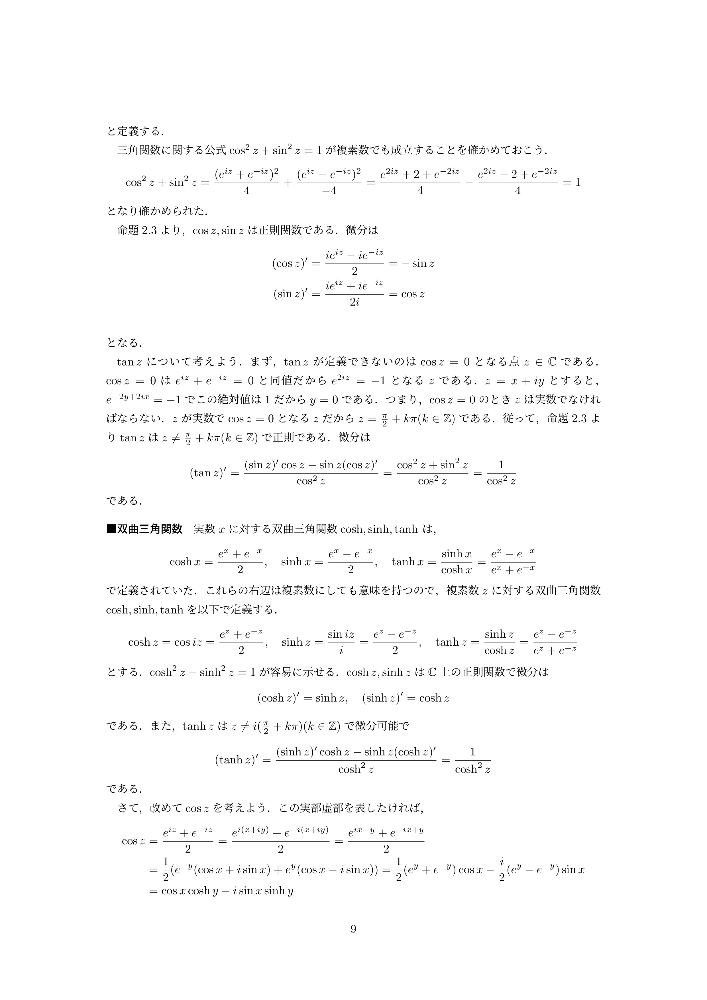
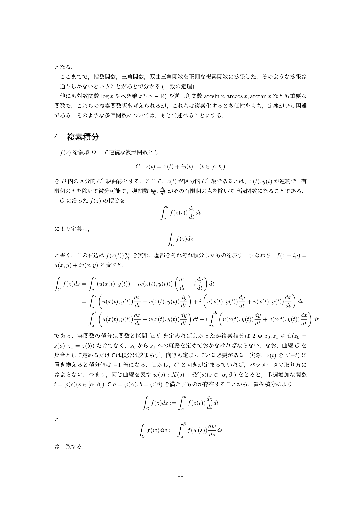

講義を通して言いたいこと
想定読了時間 約7分複素積分では、両端が同じでも経路によって値が変わることがある。三つの例を比べて、関数の正則性と経路の間の領域を見る必要性をつかむ。続いて、指数関数を出発点に複素数の三角関数・双曲三角関数を定義し、値の計算や微分を既知の式へ戻して扱う。
第4章 例4.2・4.3・4.4：経路と積分値
想定読了時間 約3分解説 1 例4.2：線分と放物線に沿う積分
想定読了時間 約1分原典：PDF pp.11–12



この例で伝えたいことは、始点と終点が同じなら、途中の経路が違っても積分値が一致する場合があるということ。ここでは、線分と放物線に沿う積分でそれを確かめている。
解説 2 例4.3・例4.4
想定読了時間 約2分
原典：PDF p.12
両端が同じという情報だけでは、積分値が等しいとは限らない。
例4.3：\(\bar z\)では経路によって異なる
\(\bar z\)は複素共役で、\(x+iy\)を\(x-iy\)に変える。線分では\(\overline{z(t)}=(1-i)t\)、放物線では\(t-it^2\)を代入し、\(dz\)は共役にしない。この関数は正則でなく、同じ両端でも値が異なる具体例になる。
例4.4：\(1/z\)では経路の間にある原点が問題
1から\(-1\)へ、上半円は\(z=e^{it}\)、下半円は\(z=e^{-it}\)（どちらも\(0\le t\le\pi\)）。ここで\(e^{it}=\cos t+i\sin t\)は単位円上の点を表す。上は反時計回り、下は時計回りなので、\(dz/z\)はそれぞれ\(i\,dt\)、\(-i\,dt\)になる。
\(1/z\)は各経路の近くでは正則だが、二つの経路の間にある原点では定義されない。「経路上で正則」だけで経路を自由に変えてよいとは言えないことが、この例の要点。
第3章 初等関数：指数関数から広げる
想定読了時間 約4分解説 3 指数関数と三角関数の定義
想定読了時間 約1〜2分
原典：PDF p.8
実数で使っていた関数を、複素数を入れても意味が通る式で定義する。
\(z=x+iy\)、\(x,y\in\mathbb R\)に対して、
実部\(x\)が絶対値\(e^x\)を決め、虚部\(y\)が角度を決める。\(e^{iy}\)は単位円上を動くので、前半の例4.4の円弧もこの式で表せる。指数法則\(e^{z_1+z_2}=e^{z_1}e^{z_2}\)も成り立つ。
複素数の三角関数は、角の図形的な意味より、この定義へ戻すと計算しやすい。例えば\(z=i\)なら\(e^{iz}=e^{-1}\)、\(e^{-iz}=e\)となる。今期の10月演習・問7〜9は、値・恒等式・方程式をこの形に直す練習に対応する。
解説 4 三角関数の性質・双曲三角関数
想定読了時間 約2分
原典：PDF p.9
微分公式は実数の場合と同じ形で使えるが、分母が0になる点を除く。
指数関数の定義から\(\cos^2z+\sin^2z=1\)、\((\cos z)'=-\sin z\)、\((\sin z)'=\cos z\)が従う。\(\sin z,\cos z\)は全平面で正則だが、\(\tan z\)は\(z=\pi/2+k\pi\)（\(k\in\mathbb Z\)、整数）では定義できない。それ以外で\((\tan z)'=1/\cos^2z\)。
双曲三角関数は指数関数の和と差をまとめた関数。\(\cosh z=\cos(iz)\)、\(\sinh z=\sin(iz)/i\)なので、三角関数に虚数倍の引数を入れたものとも結びつく。
\(\cosh,\sinh\)は全平面で正則。\(\tanh z\)は\(z=i(\pi/2+k\pi)\)を除いて正則で、導関数は\(1/\cosh^2z\)。三角関数の恒等式とは二乗の間の符号が違うことに注意する。今期の10月演習・問10の倍角公式も、指数関数の積へ戻すと導ける。
ページ末尾の式\(\cos(x+iy)=\cos x\cosh y-i\sin x\sinh y\)は、実部と虚部を読み取るための形。\(i\)の付かない項が実部、\(i\)の係数が虚部になる。複素数では\(\sin z,\cos z\)の値を実数の範囲\([-1,1]\)に制限できない。
解説 5 正則な拡張と多価性への予告
想定読了時間 約30秒
原典：PDF p.10
実数の関数を複素数へ広げるとき、一つの入力に一つの値を決められるかが問題になる。
第3章はこのページ冒頭まで。指数・三角・双曲三角関数の正則な拡張が一意であることは、後の一致の定理で扱う。ここでは結論を知る概要でよい。
対数・一般のべき乗・逆三角関数は、複素数に広げると複数の値を取り得る（多価性）。例えば\(e^{z+2\pi i}=e^z\)なので、指数関数を逆にたどっても\(z\)を一つには決められない。詳しい定義は後の範囲で学ぶ。画像の「第4章 複素積分」以降は第2回で扱った内容。